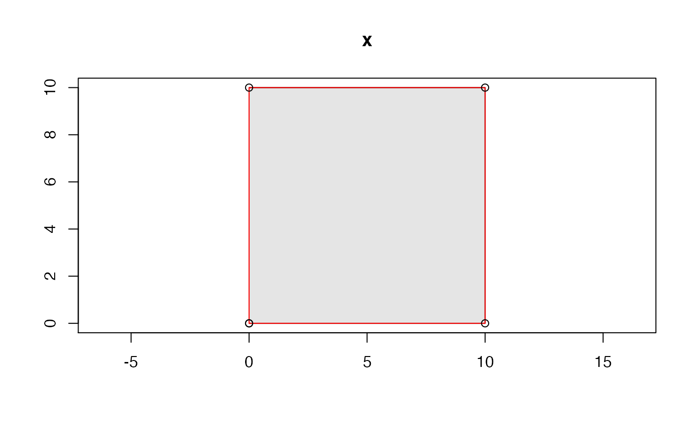

These functions send well-known geometry vectors to a
graphics device using graphics::points(),
graphics::lines(), and graphics::polypath(). These are
minimal wrappers aimed at developers who need to visualize
test data: they do not check geometry type and are unlikely
to work with vectorized graphical parameters in .... Use
the wk*_plot_new() functions to initialize a plot using the
extent of all coordinates in the vector.
wkb_draw_points(wkb, ...)
wkt_draw_points(wkt, ...)
wkb_draw_lines(wkb, ...)
wkt_draw_lines(wkt, ...)
wkb_draw_polypath(wkb, ..., rule = "evenodd")
wkt_draw_polypath(wkt, ..., rule = "evenodd")
wkb_plot_new(
wkb,
...,
asp = 1,
xlab = "",
ylab = "",
main = deparse(substitute(wkb))
)
wkt_plot_new(
wkt,
...,
asp = 1,
xlab = "",
ylab = "",
main = deparse(substitute(wkt))
)A list() of raw() vectors, such as that
returned by sf::st_as_binary().
Passed to graphics::points(),
graphics::lines(), or graphics::polypath()
A character vector containing well-known text.
Passed to graphics::polypath()
Passed to graphics::plot() to
initialize a new plot.
The input, invisibly
x <- "POLYGON ((0 0, 10 0, 10 10, 0 10, 0 0))"
wkt_plot_new(x)
wkt_draw_polypath(x, col = "grey90")
wkt_draw_lines(x, col = "red")
wkt_draw_points(x)
